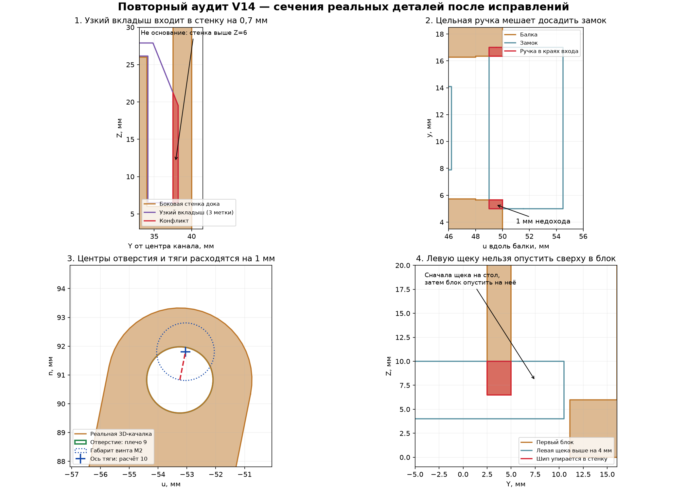

V14: повторная проверка после пяти исправлений
30 сентября 2026 · проверена локальная версия генератора от 20:35:50 и STL / оба HTML от 20:36:35. Каталог: v14_кассета_ПНД4.
Вывод: исправления настоящие, но комплект пока не закрыт для печати без подгонки. Остались столкновения узкого вкладыша, ручки замка и держателя. Кроме того, математическое плечо 10 мм не соответствует отверстию в 3D-качалке, а осевой пакет тяги показан неверно. Концепцию менять не требуется: это локальные посадки и согласование модели со сборкой.
Что из предыдущего аудита действительно исправлено
| Пункт | Независимая проверка | Статус |
|---|
| Боковые стенки в картоне | Пересечение всех пяти доков с кассетой, её стенками и листами: 0 мм³. | Закрыт. |
| Низ вкладыша в основании | Низ рабочей щеки поднят до Z=6,5, основание заканчивается на Z=6. | Старое столкновение устранено; новый конфликт узкого варианта со стенкой остаётся. |
| Замок распадался на части | Замок — одно тело; в реальном STL листа 4 обнаружено семь цельных замков. | Связность закрыта; посадка широкой ручки не закрыта. |
| Сплошные проставки | В реальном STL листа 4 восемь проставок Ø6×3 с отверстиями, объём каждой около 73 мм³, Euler=0. | Отверстие закрыто; положение проставки в сборке нет. |
| Плечо 9 / инструкция 10–13 | В расчёте и инструкциях теперь 10 мм, четырёхзвенник математически замыкается. | Число унифицировано; геометрия самой качалки осталась 9 мм. |
Сечения реальных деталей
Ниже не эскизы предполагаемых проблем, а сечения построенных сеток и их boolean-пересечений. Красным показан материал, который занимают две детали одновременно.

1. Узкий вкладыш всё ещё не садится Печатная геометрия · высокий приоритет
insert_mesh(1.8), то есть вариант с тремя метками, входит в новую боковую стенку. Это подтверждено и для зеркального варианта, и на извлечённой детали из уже сохранённого ТЕСТ_ОДИН_КАНАЛ…stl.
Рабочая грань вкладыша находится на Y=38,2 от центра канала, стенка занимает Y=37,5…40. Перекрытие 0,7 мм. Зона конфликта: X=6…20, Z=6,5…21,27; объём около 136,17 мм³ на один вкладыш. Номинальный 2,8 и широкий 3,8 этой объёмной коллизии не имеют.
По инструкции именно комбинация «номинальный + узкий» даёт щель 4,6 мм под имеющийся гофролист Т23С около 4 мм. Поэтому это не неиспользуемый резерв: ошибка касается запланированной сборки.
Исправить: согласовать боковую стенку с полным набором рабочих вкладышей, например локальной выборкой под вкладыш. Не ограничиваться подъёмом его низа. Проверять все калибры и обе стороны в собранном доке.
Источник: make_dock_full_3d.py:173, :257, :301–307. Текущий assert проверяет нижнюю отметку номинального вкладыша, а не все посадки.
2. Сращивание ручки создало новый упор замка Печатная геометрия · высокий приоритет
Ручка теперь начинается на u=49, имеет ширину y=5…17. Балка заканчивается на u=50, а вход её воронки имеет ширину y=5,65…16,35. Две полосы ручки шириной 0,65 мм входят в края балки на длине 1 мм.
Неожидаемое пересечение ручки с балкой: 8,97 мм³. Отдельные 1,008 мм³ пересечения ушек с горбиками защёлки — предусмотренный snap-fit, не смешивать их с ошибкой ручки. При отводе замка на u+1 мм конфликт ручки исчезает. Он остаётся даже при подъёме замка на 0,4 мм, достаточном для обхода горбиков.
Следствие: без деформации или обработки замок останавливается примерно на 1 мм раньше расчётного положения. Это не доказывает, что он вообще не сможет удерживать хвост, но фразу «садится до заданного упора» текущая геометрия не подтверждает.
Исправить: соединять ручку с ушками через перемычку, укладывающуюся в входной проём, либо согласованно изменить проём/ручку. Не удалять рабочие защёлки ради формального нулевого пересечения.
Источник: make_dock_full_3d.py:71 и геометрия beam() начиная с :221. В сохранённом HTML конфликт также присутствует.
3. Угол держателя входит в балку Печатная геометрия · средний приоритет
В расчётной фиксированной позиции B401 пересекает раму на 2,215 мм³. Локальная зона u=30…31,104, y=8…14, n=79,132…79,800; глубина перекрытия до 0,668 мм по n.
Это маленький угловой конфликт, а не весь держатель в балке. Его, возможно, можно устранить подрезкой напечатанного пластика, но это уже не обещанная посадка без подгонки. Смещение всей детали не следует делать автоматически: оно меняет остальные посадки.
Исправить: локальный угол/посадку и добавить boolean-проверку реального держателя с рамой. Существующие assert на сравнение вручную записанных постоянных размеров этот конфликт не обнаруживают.
4. Расчёт 10 мм, отверстие 3D-качалки 9 мм Достоверность механической сборки
Код меняет HORN=10, но импортированный H_horn только сдвигается поперёк на 3 мм. Отверстие остаётся в точке (u,n)=(-46,82) при оси сервы (-55,82), то есть на радиусе 9 мм.
В закрытом, среднем и открытом положениях расстояние между фактическим центром отверстия качалки и осью тяги равно 1 мм. Диаметр отверстия 2,3 мм; для M2 такой сдвиг не укладывается в зазор. Модель винта пересекает качалку примерно на 2,224 мм³.
Различать: это установленная ошибка CAD/анимации. Она не доказывает невозможность сборки с реальной покупной качалкой MG996R, если на ней действительно используется отверстие 10 мм. Но модель должна показывать эту реальную качалку и её отверстие, а не старую деталь.
Для плеча 10 мм расчёт требует поворота сервы на 105,003° при ходе коромысла −28…+28°. Старые границы 30…110° имеют разницу только 80° и не должны без проверки переноситься на этот узел. Расчётные углы 23,692…128,695° — геометрические относительно модели, не готовые значения для GUI/прошивки.
Исправить: форму и отверстие 3D-качалки; проверять соосность отверстий и шарниров во всём ходе, а не только замыкание формулы.
5. Проставка просверлена, но показана не между деталями Осевой пакет и аппаратная сборка
Поперечные диапазоны y в локальной голове: тяга B403 = −5,1…−1,5; качалка = 2,3…6; проставка = 3…6. То есть проставка не занимает промежуток между тягой и качалкой, а пересекает саму качалку на 8,154 мм³.
При проверке 113 положений тяга дополнительно пересекает модель вала сервы в восьми положениях ближе к открытию; максимум 5,339 мм³. Большое пересечение ступицы качалки с валом не объявляю ошибкой: это упрощённая модель шлицевого соединения.
В цифровой сборке также остались старые два винта/гайки крепления сервы M2, хотя новый держатель имеет четыре крепёжных паза M3 и закупочная инструкция соответствует им. Модель винта шарнира качалки также унаследована от старого узла.
Исправить: согласовать стороны тяги, проставки, качалки, головки винта и гайки сразу на обоих шарнирах. Простое перемещение одной тяги в сторону не является проверенным решением. Собрать узел насухо без банки и проверить весь ход; эти ошибки картинки нельзя автоматически переносить на корректно собранный реальный узел, но и считать цифровую сборку проверенной нельзя.
6. Левую щеку инструкция предлагает вставить с неправильной стороны Сборочная последовательность
Левая крайняя щека имеет мужские шипы. Пазы первого блока находятся только в нижних Z=0…6,5, выше них целая стенка. Попытка опустить щеку сверху в уже стоящий блок упирает её шипы в эту стенку.
В конечном положении конфликт 0, но на высоте +4 мм столкновение уже 407,14 мм³, на +10 мм — 697,37 мм³. Обратный порядок даёт 0 во всех проверенных положениях.
Правильный порядок без изменения деталей: положить левую щеку на стол, затем опустить на её шипы первый блок. После этого присоединить остальные блоки, правую щеку и вкладыши. Требуется обновить инструкцию и сборочную анимацию.
Источник: _dock_assembly_template.html:52; функция cheek('L').
7. Полный просмотр кассеты не совпадает с её настоящим раскроем Визуализация · не ошибка раскроя
В полном дозаторе задняя стенка сделана сплошным прямоугольником, без четырёх ответных полупазов. Поэтому она пересекает каждую внутреннюю перегородку на 4875 мм³.
В generate_cassette.py:147 функция rear_profile() вырезает нужные пазы снизу до половины высоты, и раскрой содержит правильное соединение. Следовательно, это ошибка упрощённой сборочной картинки, а не требование заново резать правильную заднюю стенку.
Исправить: брать реальный профиль задней стенки в оба полных просмотрщика. Нельзя судить о полупазовом соединении по текущему сплошному прямоугольнику.
8. Что ещё нельзя считать подтверждением работоспособности Документация и границы проверки
- Визуальная банка в анимации имеет длину 63,5 мм вместо опорной 67 мм: корпус 60 и крышка 7 перекрываются на 3,5. Для правильной оценки перекосов использовать реальные размеры.
- В анимации начало падения привязано к X=140, а реальный выходной жёлоб заканчивается на X=165. Движение банки задано сценарием; это иллюстрация, не физическое испытание готового механизма.
- Полная модель показывает пять отдельных моноблоков, тогда как печатаются два слитных двухканальных блока и один одиночный. Сборочные стыки нужно изображать по реальной печати.
- Пункт «10 пар вкладышей» неверен: в текущей сборке нужно 10 отдельных вкладышей, в печати 24 с резервами. Для внутренних стенок используются пары, для крайних — соответствующая наружная щека и один вкладыш.
ТЕСТ_ОДИН_КАНАЛ…stl содержит только один моноблок и четыре вкладыша, не полный работающий дозатор. Для теста выдачи нужны соответствующие держатель, коромысло, тяга, ось, втулка, замок, проставка, качалка и серва. Если они не напечатаны/несовместимы с имеющимися, одного этого файла недостаточно.- Готового нового G-code / проекта 3MF с настройками в проверенном каталоге не найдено. Поэтому я независимо не подтверждаю заявленные «9,5 часа» или «чистый слайс». Размеры STL, расчётная геометрия и фактическое время нарезки — разные проверки.
- Предупреждение о длинном мосте не является доказательством, что мост 60 мм обязательно получится. Проверить реальную поверхность паза и нижнюю сторону балки на первом отпечатке, а не только отсутствие касания банки.
Что прошло новую независимую проверку
Повторно запущена контактная модель именно с плечом 10 мм, без повторного использования старого результата 9 мм. Очереди 1, 3 и 10 банок Ø47, а также 10 банок Ø49 выдают по одной за цикл. В дополнительной выборке контактов полного коромысла с тремя Ø47-банками лишних пересечений не обнаружено.
В 113 положениях на диапазоне −28…+28° коромысло не сталкивается с рамой, держателем, сервой или замком; тяга не сталкивается с рамой, держателем или замком. Исключение тяга/вал описано выше.
Сохранённый STL слитного блока совпадает с построенной геометрией: объём симметрической разности 0. Данные деталей в обоих HTML совпадают. Лист 4 содержит 31 ожидаемое отдельное тело; замки цельные, отверстия проставок есть.
Ограничение: использованный симулятор упрощает банки и контакт с наклонной плоскостью. Он не рассчитывает ударные усилия, ограничения двигателя, электрическое питание, верхний ярус, картонную деформацию, шов печати, износ и все возможные боковые перекосы. Положительный результат поддерживает идею механизма, но не означает «безотказно в жизни».
Почему встроенные assert всё пропустили: связность замка не проверяет его посадку; высота низа номинального вкладыша не проверяет узкие варианты со стенкой; наличие отверстия в проставке не проверяет её положение; замыкание формулы тяги не проверяет реальные центры отверстий. Часть старых assert сравнивает записанные вручную числа, а не геометрию. Проверки полезны, но покрытие ещё недостаточно.
Минимальный план закрытия перед печатью
- Устранить три коллизии печатных деталей: узкий вкладыш/стенка, ручка замка/вход балки, угол держателя/балка. Перегенерировать тест и соответствующие листы.
- Согласовать реальную качалку на радиусе 10 мм и весь осевой пакет тяги. Исправить метизы и проверить 113 положений повторно.
- Изменить порядок установки левой щеки; поправить расхождения кассеты и анимации, чтобы дальнейшая сборка не опиралась на неверные картинки.
- Нарезать обновлённый полный набор для одного канала в OrcaSlicer. Проверить мосты, тонкие стенки, отверстия, шов, первый слой и реальную оценку времени.
- После печати: свободный ход без тяги; сухая сборка; медленный ход сервы без банки; одиночная банка; очередь; отдельно последняя банка и переход с верхнего яруса. Записать фактические сбои и не переходить к пяти каналам по одному удачному циклу.
Исходный проект, STL, настройки и прошивку я не менял. Созданы только независимый аудит, иллюстрация и проверочные скрипты в АУДИТ_2026-09-30_ПОВТОРНЫЙ. Генератор исполнялся только до секции экспорта, поэтому модель не перезаписывалась.
Как воспроизвести и определить проверенную версию
В audit-каталоге запустить python recheck.py. Нужны зависимости исходного генератора: NumPy, trimesh, manifold3d, Shapely, SciPy и зависимости построения сеток; для картинки Matplotlib. Скрипт также использует существующий REFERENCE_D2/SOURCE/simulate.py в локальном BX04-архиве. Вывод идёт в терминал; экспортеры проекта не запускаются.
Нулевые по объёму касания поверхностей не объявлены коллизиями. Специальные пересечения snap-fit горбиков и шлицевого соединения отличены от непредусмотренных столкновений. Все контролируемые файлы сохранили свои хеши до/после проверки.
SHA-256
make_dock_full_3d.py
6c62809ca087f124c2028405765a934c71d9c3153630dbb2ffbf60c8a7d0116c
ТЕСТ_ОДИН_КАНАЛ (проверить проход банки).stl
c66ce45a1c55fb1eba964cf7ec4f20dcb3f314a32f7d456c4c8d78b75a43e3a9
4 ПЕЧАТЬ (коромысла, тяги, втулки, замки).stl
05292e5221d36c2fce1eb0132b31dae05405894d49306e33751ed5ae9eb953f8